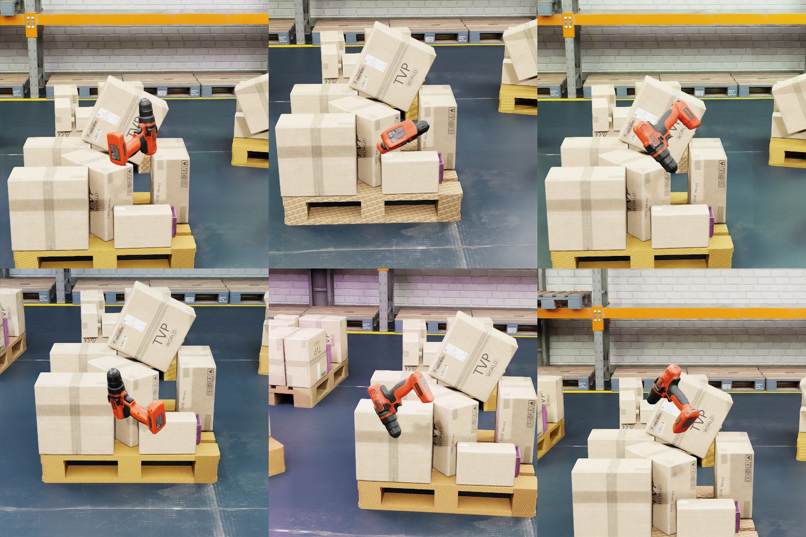
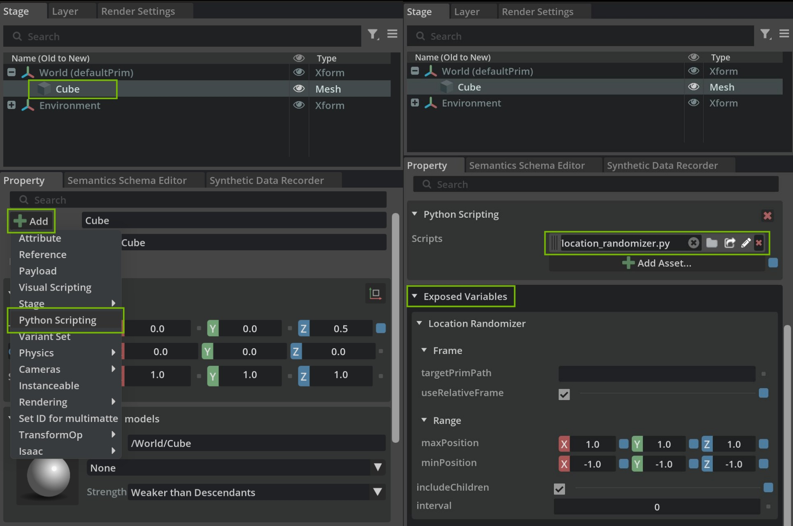

模块化行为脚本#
概述#
本教程介绍 isaacsim.replicator.behavior 扩展，并演示其用于 Isaac Sim Replicator 合成数据生成 (SDG) 的模块化行为脚本。这些行为基于 Python Scripting Component 构建，可直接附加到 USD 场景中的 prim 上，作为随机化工具或自定义智能资产行为使用，具有可复用、可共享且易于修改的特点。
行为功能包含在两个扩展中：
isaacsim.replicator.behavior— 包含行为脚本的核心扩展。它不依赖 UI，可在无头模式下运行。isaacsim.replicator.behavior.ui— UI 扩展，用于在 Property 面板中渲染暴露的变量。
这两个扩展通过 carb 事件进行通信，因此核心扩展可以在未加载 UI 的情况下运行。有关详细信息，请参阅 核心与 UI 扩展分离。
捆绑的行为脚本位于以下路径：
/exts/isaacsim.replicator.behavior/isaacsim/replicator/behavior/behaviors/*
学习目标#
完成本教程后，您将了解如何：
使用预构建的行为脚本执行常见的合成数据生成任务，包括：
Location Randomizer - 在指定范围内随机化 prim 的位置，以实现物体放置的多样性
Rotation Randomizer - 应用随机旋转，以增强数据集中的方向多样性
Look At Behavior - 使 prim 持续面向目标位置或其他 prim，用于相机跟踪
Light Randomizer - 随机化光照属性（如颜色和强度），以模拟不同的光照条件
Texture Randomizer - 为材质应用随机纹理，以增加视觉多样性
Volume Stack Randomizer - 使用物理模拟随机堆叠物体，以实现逼真的排列
理解行为脚本架构 - 了解模块化 Python 脚本如何附加到 prim，以及如何通过公开的 USD 属性进行自定义，包括更新间隔和随机化范围等可配置参数
控制行为执行 - 配置行为以响应时间轴事件（开始、更新、停止）运行，或使用自定义事件独立触发行为，以适应高级工作流
创建自定义行为脚本 - 使用提供的模板和基类开发您自己的行为，以满足特定的合成数据生成需求
构建复杂的 SDG 流水线 - 组合多个行为、模拟和事件，以创建复杂的数据生成工作流，例如基于物理的物体堆叠后自动进行数据捕获
先决条件#
开始之前，请确保您熟悉以下内容：
用于创建和操作 USD 阶段的 USD 和 Isaac Sim API
Isaac Sim 中的 Python Scripting Component
timeline 和 custom events 系统
用于合成数据生成的 omni.replicator 及其 Isaac Sim tutorials
用于数据捕获的 Writers 和 annotators
使用 Script Editor 运行脚本以设置和运行流水线
注意
若要从 UI（Property 面板 > Add > Python Scripting）将行为脚本附加到 prim，请从 Window > Extensions 启用 omni.behavior.scripting.ui 扩展。此扩展提供 Python Scripting Component UI，且默认未启用。isaacsim.replicator.behavior 中的核心行为无需此扩展即可运行，这对于无头 SDG 流水线非常有用。
演示#
示例部分 提供了如何使用行为脚本创建自定义合成数据生成流水线的演示：



行为脚本#
行为脚本是附加到 USD 阶段中 prim 的模块化 Python 脚本。默认情况下，它们响应时间轴事件——开始、暂停、停止和更新——并定义在模拟或数据生成期间应用于该 prim 的随机化或自定义逻辑。
将脚本直接附加到 prim 可将行为嵌入 USD 本身，从而为您提供：
模块化。 在不更改核心逻辑的情况下，在 prim 上附加、分离或交换脚本。
可共享性。 将行为嵌入资产中，并在不同项目或阶段之间重复使用。
可配置性。将变量作为 USD 属性公开，并在不修改源代码的情况下进行编辑。
持久性。脚本驻留在 prim 上并随 stage 一起移动，因此您可以将其与 stage 一起进行版本控制。
可重用性和封装性。只需编写一次行为，即可在多个 prim 和场景中重复使用，且外部依赖极少。

通过 USD 属性公开变量#
每个行为脚本都会将其输入参数作为带命名空间的 USD 属性公开在承载该脚本的 prim 上。这使您可以直接从属性面板中编辑行为参数——或通过 USD API 以编程方式编辑——而无需修改脚本源代码。
将变量作为 USD 属性公开可提供以下三项优势：
定制化。针对每个 prim 实例调整目标位置、范围或种子等参数。
交互性。在 UI 中编辑值，并在下次更新时观察其效果。
一致性。无论内部逻辑如何，每个行为都提供相同的编辑界面。
脚本使用 Isaac Sim 实验性核心包装器在共享命名空间（exposedVar:<behaviorNamespace>:<attrName>）下创建自定义 USD 属性，并在执行期间读取这些属性以驱动其逻辑。在适用的情况下，变换和属性更新使用 Replicator 函数式 API。
核心与 UI 扩展分离#
行为功能分布在两个扩展中：
isaacsim.replicator.behavior— core 扩展。它定义行为脚本，创建和移除暴露的 USD 属性，且不依赖 UI。这使您可以在无头模式（headless mode）下运行行为（例如，在自动化 SDG 流水线中）。isaacsim.replicator.behavior.ui— UI 扩展。它向 Property 面板注册一个ExposedVariablesPropertyWidget，自动将暴露的变量渲染为可编辑字段。
这两个扩展通过单个 carb 事件 isaacsim.replicator.behavior.EXPOSED_VARS_CHANGED 进行通信：
每当 core 扩展在 prim 上创建或移除暴露的变量时，都会分发该事件。
UI 扩展在启动时订阅该事件，并在事件触发时重建 Property 面板。
这种基于事件的解耦允许 core 扩展在 UI 未加载的情况下运行，同时也允许 UI 扩展按需刷新，而无需 core 导入任何 UI 模块。
暴露变量定义示例：
VARIABLES_TO_EXPOSE = [
{
"attr_name": "targetLocation",
"attr_type": Sdf.ValueTypeNames.Vector3d,
"default_value": Gf.Vec3d(0.0, 0.0, 0.0),
"doc": "The 3D vector specifying the location to look at.",
},
{
"attr_name": "targetPrimPath",
"attr_type": Sdf.ValueTypeNames.String,
"default_value": "",
"doc": "The path of the target prim to look at. If specified, it has priority over the target location.",
},
# Additional variables...
]
基于事件的自定义行为脚本#
时间线驱动的行为很方便，但某些工作流需要独立于模拟时钟运行 — 例如，模拟前设置、一次性场景准备，或必须在数据采集开始前完成的序列。
基于事件的脚本允许行为跳过默认的时间线钩子，转而发布和订阅 Omniverse 事件总线上的自定义事件。这为您提供了：
灵活性。 按需触发行为，与模拟时间线解耦。
模块化。通过事件链式连接行为，编排复杂的工作流。
性能。仅在触发时运行行为，避免逐帧执行工作负载。
volume_stack_randomizer.py 脚本演示了此模式。它使用自定义事件在时间线开始之前，利用物理引擎对资产进行投放、堆叠和稳定处理，从而使数据采集阶段基于确定性的初始状态运行。
脚本示例#
本节将探讨 isaacsim.replicator.behavior 扩展中提供的各种行为脚本。每个脚本都提供特定功能，可增强合成数据生成工作流。这些脚本设计为模块化、可复用，并可通过暴露的变量进行自定义。
行为脚本的文件夹路径为：
/exts/isaacsim.replicator.behavior/isaacsim/replicator/behavior/behaviors/*
位置随机化器#
location_randomizer.py 脚本在运行时随机化指定边界内 prim 的位置，为增强合成数据集提供位置可变性。
目的：在定义的边界内随机化 prim 位置，以创建物体放置的多样性。
主要特性：
在最小和最大边界范围内进行位置范围随机化
支持使用目标 prim 作为参考点的相对定位
包含子 prim 以实现层级随机化
可配置的更新间隔以控制性能
暴露变量：
Configuration Parameters
range:minPosition (Vector3d)：随机偏移量的最小边界。
range:maxPosition (Vector3d)：随机偏移量的最大边界。
frame:useRelativeFrame (Bool)：如果为 True，则保留 prim 的初始偏移量（如果设置了目标 prim，则相对于目标 prim；否则相对于其自身起始位置），并在其基础上添加随机偏移量。如果为 False，则随机偏移量作为绝对位置应用（如果设置了目标 prim，则相对于目标 prim；否则相对于世界原点）。
frame:targetPrimPath (String)：可选的参考 prim 路径。设置后，所有随机化操作均以此 prim 的世界位置为锚点；留空则独立于其他任何 prim 进行随机化。
includeChildren (Bool)：在随机化中包含子 prim。
interval (UInt)：更新频率（0 = 每帧）。
seed (Int)：用于生成可复现结果的随机种子（-1 = 非确定性）。
行为矩阵：
frame:targetPrimPath 和 frame:useRelativeFrame 的组合决定了随机偏移量的应用方式：
|
|
最终位置 |
|---|---|---|
空 |
False |
|
空 |
True |
|
已设置 |
False |
|
已设置 |
True |
|
要使 prim 的随机化完全独立于其他任何 prim，请将 frame:targetPrimPath 留空。仅切换 frame:useRelativeFrame 并不能将 prim 与目标解耦。
子 Prim 包含：
Child Prim Selection Logic
def _setup(self):
include_children = self._get_exposed_variable("includeChildren")
if self.prim and self.prim.IsValid():
if include_children:
self._valid_prims = prim_utils.get_all_matching_child_prims(
self.prim,
predicate=lambda prim, _: prim.IsValid() and prim.IsA(UsdGeom.Xformable),
include_self=True,
)
elif self.prim.IsA(UsdGeom.Xformable):
self._valid_prims = [self.prim]
else:
self._valid_prims = []
else:
self._valid_prims = []
if not self._valid_prims:
carb.log_warn(f"[{self.prim_path}] No valid prims found.")
当 includeChildren 为 True 时：使用
prim_utils.get_all_matching_child_prims选择所有可变换的后代 Prim当 includeChildren 为 False 时：仅包含已分配的 Prim（如果它是可变换的）
如果未找到有效的 Prim，则记录警告
随机化逻辑：
Core Randomization Implementation
def _randomize_location(self, prim):
random_offset = Gf.Vec3d(
self._rng.uniform(self._min_position[0], self._max_position[0]),
self._rng.uniform(self._min_position[1], self._max_position[1]),
self._rng.uniform(self._min_position[2], self._max_position[2]),
)
if self._target_prim:
target_loc = self._get_world_location(self._target_prim)
loc = (
target_loc + self._target_offsets[prim] + random_offset
if self._use_relative_frame
else target_loc + random_offset
)
else:
loc = self._initial_locations[prim] + random_offset if self._use_relative_frame else random_offset
with stage_utils.use_stage(self.stage):
rep.functional.modify.position(prim, loc, write_to_usd=True)
在配置的
range:minPosition/range:maxPosition边界内生成随机偏移量。如果设置了
frame:targetPrimPath，则将结果锚定到目标 Prim 的当前世界位置。如果
frame:useRelativeFrame为 True，则保留 Prim 的初始偏移量（如果设置了目标 Prim，则相对于目标 Prim；否则相对于其自身起始位置），从而使随机偏移量作为抖动而非绝对定位。通过
rep.functional.modify.position写入最终位置，同时保留现有的变换表示形式。
基本设置：
Step-by-Step Configuration
附加脚本：将 location_randomizer.py 添加到目标 Prim
设置边界：配置 range:minPosition 和 range:maxPosition
启用子级：将 includeChildren 设置为 True 以进行层级随机化
设置间隔：使用 interval 控制更新频率
示例配置：
range:minPosition：(-5.0, -5.0, 0.0)
range:maxPosition：(5.0, 5.0, 2.0)
includeChildren：True
interval：5（每 5 帧更新一次）
使用场景：
背景对象：随机化道具位置以增加场景多样性。将
frame:targetPrimPath留空并将frame:useRelativeFrame设置为 True，可使每个道具在其原始位置附近抖动。跟随移动目标：保持对象相对于移动 Prim 的偏移量。将
frame:targetPrimPath设置为目标，并将frame:useRelativeFrame设置为 True。吸附至目标附近：将对象放置在目标周围的随机位置，忽略其原始位置。将
frame:targetPrimPath设置为目标，并将frame:useRelativeFrame设置为 False。层级随机化：通过启用
includeChildren对对象组应用随机化。
旋转随机化器#
rotation_randomizer.py 脚本在运行时对 Prim 应用随机旋转，从而增强合成数据集中的方向多样性。
目的：在指定的欧拉角范围内对 Prim 应用随机旋转。
主要特性：
在最小和最大角度范围内进行旋转范围随机化
包含子 Prim 以实现层级旋转随机化
可配置的更新间隔：用于性能优化
暴露变量：
Configuration Parameters
range:minRotation (Vector3d)：最小旋转角度（度数，X, Y, Z）
range:maxRotation (Vector3d)：最大旋转角度（度数，X, Y, Z）
includeChildren (Bool)：在旋转随机化中包含子 Prim
interval (UInt)：更新频率（0 = 每帧）
seed (Int)：用于生成可复现结果的随机种子（-1 = 非确定性）
子图元选择：
Child Prim Selection Logic
def _setup(self):
include_children = self._get_exposed_variable("includeChildren")
if self.prim and self.prim.IsValid():
if include_children:
self._valid_prims = prim_utils.get_all_matching_child_prims(
self.prim,
predicate=lambda prim, _: prim.IsValid() and prim.IsA(UsdGeom.Xformable),
include_self=True,
)
elif self.prim.IsA(UsdGeom.Xformable):
self._valid_prims = [self.prim]
else:
self._valid_prims = []
else:
self._valid_prims = []
if not self._valid_prims:
carb.log_warn(f"[{self.prim_path}] No valid prims found.")
当 includeChildren 为 True 时：包含所有可变换的后代 prim
当 includeChildren 为 False 时：仅考虑已分配的 prim（如果其可变换）
如果未找到有效的 prim，则记录警告
旋转随机化：
Core Rotation Implementation
def _randomize_rotation(self, prim):
rotation = (
self._rng.uniform(self._min_rotation[0], self._max_rotation[0]),
self._rng.uniform(self._min_rotation[1], self._max_rotation[1]),
self._rng.uniform(self._min_rotation[2], self._max_rotation[2]),
)
with stage_utils.use_stage(self.stage):
rep.functional.modify.rotation(
prim,
rotation,
value_rotation_order="XYZ",
write_to_usd=True,
)
为每个轴在指定范围内生成随机欧拉角
将采样值视为 XYZ 顺序的欧拉角
通过
rep.functional.modify.rotation应用旋转
基本设置：
Step-by-Step Configuration
附加脚本：将 rotation_randomizer.py 添加到目标 prim
设置旋转范围：配置 range:minRotation 和 range:maxRotation
启用子级：将 includeChildren 设置为 True 以启用层级旋转
设置间隔：使用 interval 控制更新频率
示例配置：
range:minRotation：(-180.0, -90.0, 0.0) 度
range:maxRotation：(180.0, 90.0, 360.0) 度
includeChildren：True
interval：10（每 10 帧更新一次）
使用场景：
物体多样性：随机化道具朝向以创建多样化的场景
翻滚效果：模拟下落或漂浮的物体
展示角度：改变物体视角以生成训练数据
Look At 行为#
look_at_behavior.py 脚本使图元持续朝向指定目标，适用于相机跟踪和传感器对准。
用途：使图元持续朝向目标位置或另一个图元。
主要特性：
支持使用固定坐标或动态图元跟踪来指定目标
通过控制 Up 轴来保持方向一致性
支持包含子图元以实现层级化的 Look At 行为
可配置的更新间隔以控制性能
暴露变量：
Configuration Parameters
targetLocation (Vector3d)：要朝向的固定 3D 坐标
targetPrimPath (String)：目标图元的路径（覆盖 targetLocation）
upAxis (Vector3d)：用于定向的 Up 轴（例如，(0, 0, 1) 表示 +Z 轴）
includeChildren (Bool)：在 Look At 行为中包含子图元
interval (UInt)：更新频率（0 = 每帧）
目标图元处理：
Target Prim Resolution
def _setup(self):
target_prim_path = self._get_exposed_variable("targetPrimPath")
if target_prim_path:
with stage_utils.use_stage(self.stage):
self._target_prim = prim_utils.get_prim_at_path(target_prim_path)
if not self._target_prim.IsValid() or not self._target_prim.IsA(UsdGeom.Xformable):
self._target_prim = None
carb.log_warn(f"[{self.prim_path}] Invalid target prim path: {target_prim_path}")
当指定 targetPrimPath 时，其优先级高于 targetLocation
验证目标图元是否存在且可变换
如果目标图元无效，则记录警告
方向计算：
Look-At Rotation Implementation
def _apply_behavior(self):
target = (
self._target_prim
if self._target_prim is not None and prim_utils.is_prim_valid(self._target_prim)
else self._target_location
)
if isinstance(target, Gf.Vec3d):
target_position = np.asarray(target)
else:
target_position, _ = xform_utils.get_world_pose(target, device="cpu")
target_position = target_position.numpy()
for prim in self._valid_prims:
if not prim_utils.is_prim_valid(prim):
continue
eye_position, _ = xform_utils.get_world_pose(prim, device="cpu")
if np.linalg.norm(target_position - eye_position.numpy()) < 1e-6:
continue
with stage_utils.use_stage(self.stage):
rep.functional.modify.look_at(
prim,
target,
look_at_up_axis=self._up_axis,
write_to_usd=True,
)
通过
xform_utils.get_world_pose获取世界坐标位置跳过视点与目标位置重合的情况，因为此时 Look At 旋转未定义
通过
rep.functional.modify.look_at应用方向
基本设置：
Step-by-Step Configuration
附加脚本：将 look_at_behavior.py 添加到您的相机或传感器图元
设置目标：配置 targetLocation 或 targetPrimPath
调整上轴：设置 upAxis 以维持所需的朝向
设置间隔：使用 interval 控制更新频率
示例配置：
targetPrimPath：/World/MovingObject/Prim
upAxis：(0, 0, 1)（Z 轴向上朝向）
includeChildren：False（仅相机）
interval：1（每帧更新）
使用场景：
相机跟踪：使相机跟随移动主体
传感器对齐：将传感器指向目标对象
光照方向：使灯光跟随对象定向
灯光随机化器#
light_randomizer.py 脚本通过随机化灯光属性来模拟不同的光照条件，从而增强场景的多样性。
目的：随机化灯光颜色和强度属性，以创建多样化的光照场景。
主要特性：
颜色随机化：在指定范围内改变 RGB 值
强度随机化：在最小值和最大值之间调整亮度
包含子灯光：用于层级灯光随机化
可配置的更新间隔：用于性能优化
暴露变量：
Configuration Parameters
includeChildren (Bool)：在随机化中包含子灯光 Prim
interval (UInt)：更新频率（0 = 每帧）
range:minColor (Color3f)：颜色随机化的最小 RGB 值
range:maxColor (Color3f)：颜色随机化的最大 RGB 值
range:intensity (Float2)：以 (min, max) 值表示的强度范围
seed (Int)：用于生成可复现结果的随机种子（-1 = 非确定性）
灯光属性随机化：
Color and Intensity Randomization
def _apply_behavior(self):
for prim in self._valid_prims:
if not prim_utils.is_prim_valid(prim):
continue
rand_color = (
self._rng.uniform(self._min_color[0], self._max_color[0]),
self._rng.uniform(self._min_color[1], self._max_color[1]),
self._rng.uniform(self._min_color[2], self._max_color[2]),
)
rep.functional.modify.attribute(prim, "inputs:color", rand_color)
rand_intensity = self._rng.uniform(self._intensity_range[0], self._intensity_range[1])
rep.functional.modify.attribute(prim, "inputs:intensity", rand_intensity)
在指定的颜色范围内生成随机 RGB 值
在定义的边界内应用随机强度值
通过
rep.functional.modify.attribute更新灯光属性
子灯光选择：
Light Prim Discovery
def _setup(self):
include_children = self._get_exposed_variable("includeChildren")
if include_children:
self._valid_prims = prim_utils.get_all_matching_child_prims(
self.prim,
predicate=lambda prim, _: prim.IsValid() and prim_utils.has_api(prim, UsdLux.LightAPI),
include_self=True,
)
elif prim_utils.has_api(self.prim, UsdLux.LightAPI):
self._valid_prims = [self.prim]
else:
self._valid_prims = []
carb.log_warn(f"[{self.prim_path}] No valid light prims found.")
使用 UsdLux.LightAPI 识别有效的灯光 prim
当启用 includeChildren 时包含子灯光
验证目标 prim 或子级是否具有灯光 API
基本设置：
Step-by-Step Configuration
附加脚本：将 light_randomizer.py 添加到灯光 prim 或包含灯光的父级
设置颜色范围：配置 range:minColor 和 range:maxColor
设置强度范围：定义 range:intensity 的最小/最大值
启用子级：对于多个灯光，将 includeChildren 设置为 True
示例配置：
range:minColor: (0.8, 0.8, 0.8)（暖白色最小值）
range:maxColor: (1.0, 1.0, 1.0)（亮白色最大值）
range:intensity: (1000.0, 5000.0)（强度范围）
includeChildren：True
interval: 0（每帧更新）
使用场景：
昼夜循环：模拟变化的光照条件
动态环境：创建闪烁或变化的光源
色温：在暖色和冷色光照之间随机切换
纹理随机化器#
texture_randomizer.py 脚本随机将纹理应用于材质，以增加对象的视觉多样性。
目的： 随机将纹理应用于可视图元（prim），以创建多样化的材质外观。
主要特性：
从提供的资源数组或 CSV 列表中选择纹理
使用随机参数（缩放、旋转、UV 投影）创建材质
包含子图元以实现层级纹理随机化
可配置的更新间隔以控制性能
暴露变量：
Configuration Parameters
includeChildren (Bool)：在纹理随机化中包含子图元
interval (UInt)：更新频率（0 = 每帧）
textures:assets (AssetArray)：要使用的纹理资源列表
textures:csv (String)：纹理 URL 的 CSV 字符串
projectUvwProbability (Float)：启用 project_uvw 的概率
textureScaleRange (Float2)：纹理缩放范围，格式为 (最小值, 最大值)
textureRotateRange (Float2)：纹理旋转范围（度），格式为 (最小值, 最大值)
seed (Int)：用于生成可复现结果的随机种子（-1 = 非确定性）
纹理应用：
Material and Shader Randomization
def _apply_behavior(self):
if not self._texture_urls:
carb.log_warn(f"[{self.prim_path}] No texture URLs provided; skipping.")
return
for material in self._texture_materials:
diffuse_texture = self._rng.choice(self._texture_urls)
material.set_input_values("diffuse_texture", [diffuse_texture])
project_uvw = self._rng.choice(
[True, False],
p=[self._project_uvw_probability, 1 - self._project_uvw_probability],
)
material.set_input_values("project_uvw", [bool(project_uvw)])
texture_scale = self._rng.uniform(self._texture_scale_range[0], self._texture_scale_range[1])
material.set_input_values("texture_scale", [texture_scale, texture_scale])
texture_rotate = self._rng.uniform(self._texture_rotate_range[0], self._texture_rotate_range[1])
material.set_input_values("texture_rotate", [texture_rotate])
从提供的资源列表中随机选择纹理
应用概率性 UV 投影设置
随机化纹理缩放和旋转参数
通过实验性的
OmniPbrMaterial包装器更新着色器输入
子图元选择：
Geometric Prim Discovery
def _setup(self):
include_children = self._get_exposed_variable("includeChildren")
if include_children:
self._valid_prims = prim_utils.get_all_matching_child_prims(
self.prim,
predicate=lambda prim, _: prim.IsValid() and prim.IsA(UsdGeom.Gprim),
include_self=True,
)
elif self.prim.IsA(UsdGeom.Gprim):
self._valid_prims = [self.prim]
else:
self._valid_prims = []
carb.log_warn(f"[{self.prim_path}] No valid prims found.")
使用 UsdGeom.Gprim 识别适合应用材质的几何图元
当启用 includeChildren 时包含子图元
验证目标图元是否可以接收材质绑定
基本设置：
Step-by-Step Configuration
附加脚本：将 texture_randomizer.py 添加到几何图元
提供纹理：使用 textures:assets 或 textures:csv 设置纹理路径
配置参数：调整缩放、旋转和 UV 投影设置
启用子对象：对于多个对象，将 includeChildren 设置为 True
示例配置：
textures:csv：“texture1.jpg,texture2.png,texture3.exr”
textureScaleRange：(0.5, 2.0)（缩放变化）
textureRotateRange：(0.0, 360.0)（完整旋转）
projectUvwProbability：0.3（30% 的 UV 投影概率）
includeChildren：True
使用场景：
材质多样性：为对象创建多样化的表面外观
背景变化：随机化环境元素的纹理
资产增强：通过纹理变化增强对象数据集
体积堆栈随机化器#
volume_stack_randomizer.py 脚本使用物理模拟来随机堆叠对象，以实现逼真的对象排列。
用途：使用物理模拟在指定区域内随机投放和堆叠资产。
主要特性：
从提供的列表或 CSV 路径中随机化资产
通过物理模拟实现自然的堆叠行为
基于事件的执行，独立于模拟时间轴
可自定义投放高度、资产数量和渲染等参数
暴露变量：
Configuration Parameters
includeChildren (Bool)：在行为中包含子 prim
event:input (String)：用于订阅行为控制的事件名称
event:output (String)：行为执行后发布的事件名称
assets:assets (AssetArray)：要生成的资产引用列表
assets:csv (String)：要生成的资产 URL 的 CSV 字符串
assets:numRange (Int2)：生成资产数量的范围（最小值，最大值）
dropHeight (Float)：投放资产的高度
renderSimulation (Bool)：是否渲染模拟步骤
removeRigidBodyDynamics (Bool)：模拟后移除刚体动力学
preserveSimulationState (Bool)：保留最终模拟状态
seed (Int)：用于可重现资产选择和放置的随机种子（-1 = 非确定性）
核心结构：
Class Architecture
class VolumeStackRandomizer(BehaviorScript):
BEHAVIOR_NS = "volumeStackRandomizer"
EVENT_NAME_IN = f"{EXTENSION_NAME}.{BEHAVIOR_NS}.in"
EVENT_NAME_OUT = f"{EXTENSION_NAME}.{BEHAVIOR_NS}.out"
ACTION_FUNCTION_MAP = {
"setup": "_setup_async",
"run": "_run_behavior_async",
"reset": "_reset_async",
}
async def _setup_async(self):
# Asynchronous setup logic...
pass
async def _run_behavior_async(self):
# Asynchronous behavior execution...
pass
async def _reset_async(self):
# Asynchronous reset logic...
pass
使用自定义事件进行生命周期管理的基于事件的行为
用于非阻塞物理模拟的异步方法
用于外部事件控制的 Action 函数映射
子图元选择：
Surface Area Discovery
async def _setup_async(self):
include_children = self._get_exposed_variable("includeChildren")
if include_children:
self._valid_prims = prim_utils.get_all_matching_child_prims(
self.prim,
predicate=lambda prim, _: prim.IsValid() and prim.IsA(UsdGeom.Gprim),
include_self=True,
)
elif self.prim.IsA(UsdGeom.Gprim):
self._valid_prims = [self.prim]
else:
self._valid_prims = []
carb.log_warn(f"[{self.prim_path}] No valid prims found.")
识别适合用作物体堆叠表面的几何 Prim
当启用 includeChildren 时包含子图元
验证表面 Prim 是否可以接收物理对象
自定义事件系统：
Event-Based Execution Control
Volume Stack Randomizer 使用自定义事件而非基于时间线的更新进行操作，从而允许精确控制堆叠操作发生的时间。
事件流程：
重置阶段：清理之前的模拟状态
设置阶段：生成资产并准备物理模拟
运行阶段：执行用于物体堆叠的物理模拟
完成：发布包含最终状态的完成事件
事件控制示例：
async def run_stacking_simulation_async(prim_path=None):
actions = [("reset", "RESET", 10), ("setup", "SETUP", 500), ("run", "FINISHED", 1500)]
for action, state, wait in actions:
await publish_event_and_wait_for_completion_async(
publish_payload={"prim_path": prim_path, "action": action},
expected_payload={"prim_path": prim_path, "state_name": state},
publish_event_name=VolumeStackRandomizer.EVENT_NAME_IN,
subscribe_event_name=VolumeStackRandomizer.EVENT_NAME_OUT,
max_wait_updates=wait,
)
集成优势：
精确控制：在特定工作流节点执行堆叠
顺序操作：链接多个堆叠操作
状态管理：跟踪每个模拟阶段的完成情况
外部编排：通过外部脚本或系统进行控制
基本设置：
Step-by-Step Configuration
附加脚本：将 volume_stack_randomizer.py 添加到表面 Prim
配置资产：使用对象路径设置 assets:csv 或 assets:assets
设置参数：定义 assets:numRange、dropHeight 及其他设置
控制事件：使用自定义事件触发堆叠操作
示例配置：
assets:csv：“box1.usd,box2.usd,cylinder.usd”
assets:numRange：(5, 20)（生成 5-20 个对象）
dropHeight：2.0（从表面上方 2 个单位处落下）
renderSimulation：True（显示模拟步骤）
preserveSimulationState：True（保留最终排列）
使用场景：
对象排列：创建逼真的对象堆叠
物理验证：测试对象交互和稳定性
场景准备：在数据采集前设置复杂场景
模拟工作流：将基于物理的随机化集成到流水线中
模板#
本节提供模板脚本，作为创建自定义行为的起点。
Available Templates
模板脚本：
example_behavior.py：包含新行为样板代码的基础模板
base_behavior.py 和 example_base_behavior.py：演示基类行为继承，用于结构化开发
example_custom_event_behavior.py：展示基于事件的行为实现
模板主要特性：
变量暴露：演示将变量暴露为 USD 属性，以便进行 UI 自定义
行为结构：提供用于时间轴集成的必要方法（on_init、on_play、on_update、on_stop、on_destroy）
可扩展性：基础行为类支持在新行为中轻松扩展和复用
事件集成：展示了基于时间轴和基于自定义事件的两种方法
示例#
以下示例演示了如何使用行为脚本在 Isaac Sim 中设置并运行合成数据生成。它展示了如何利用行为脚本进行堆叠模拟、纹理随机化、光照行为和相机跟踪，最终捕获具有随机化场景配置的合成数据。
示例要点：
体积堆叠模拟：使用物理模拟随机堆叠资产，以创建逼真的排列。
纹理随机化：对资产应用随机纹理，以增加场景多样性。
光照和相机行为：对光照属性添加随机化，并使相机跟踪特定目标。
合成数据捕获：使用配置的行为生成并保存合成图像。
示例脚本：
可以直接从 Script Editor 运行演示脚本：
Behavior script-based SDG script:
import asyncio
import inspect
import os
import isaacsim.core.experimental.utils.prim as prim_utils
import isaacsim.core.experimental.utils.semantics as semantics_utils
import isaacsim.core.experimental.utils.stage as stage_utils
import numpy as np
import omni.kit.app
import omni.replicator.core as rep
import omni.timeline
from isaacsim.replicator.behavior.behaviors import (
LightRandomizer,
LocationRandomizer,
LookAtBehavior,
RotationRandomizer,
TextureRandomizer,
VolumeStackRandomizer,
)
from isaacsim.replicator.behavior.global_variables import EXPOSED_ATTR_NS
from isaacsim.replicator.behavior.utils.behavior_utils import (
add_behavior_script_with_parameters_async,
publish_event_and_wait_for_completion_async,
)
from isaacsim.storage.native import get_assets_root_path_async
from pxr import Gf
async def setup_and_run_stacking_simulation_async(prim, seed: int | None = None):
STACK_ASSETS_CSV = (
"/Isaac/Environments/Simple_Warehouse/Props/SM_CardBoxC_01.usd,"
"/Isaac/Environments/Simple_Warehouse/Props/SM_CardBoxD_01.usd,"
"/Isaac/Props/KLT_Bin/small_KLT_visual.usd,"
)
# Add the behavior script with custom parameters
script_path = inspect.getfile(VolumeStackRandomizer)
parameters = {
f"{EXPOSED_ATTR_NS}:{VolumeStackRandomizer.BEHAVIOR_NS}:assets:csv": STACK_ASSETS_CSV,
f"{EXPOSED_ATTR_NS}:{VolumeStackRandomizer.BEHAVIOR_NS}:assets:numRange": Gf.Vec2i(2, 5),
f"{EXPOSED_ATTR_NS}:{VolumeStackRandomizer.BEHAVIOR_NS}:renderSimulation": False,
}
if seed is not None:
parameters[f"{EXPOSED_ATTR_NS}:{VolumeStackRandomizer.BEHAVIOR_NS}:seed"] = seed
await add_behavior_script_with_parameters_async(prim, script_path, parameters)
# Helper function to handle publishing and waiting for events
async def handle_event(action, expected_state, max_wait):
return await publish_event_and_wait_for_completion_async(
publish_payload={"prim_path": prim.GetPath(), "action": action},
expected_payload={"prim_path": prim.GetPath(), "state_name": expected_state},
publish_event_name=VolumeStackRandomizer.EVENT_NAME_IN,
subscribe_event_name=VolumeStackRandomizer.EVENT_NAME_OUT,
max_wait_updates=max_wait,
)
# Define and execute the stacking simulation steps
actions = [("reset", "RESET", 10), ("setup", "SETUP", 500), ("run", "FINISHED", 10000)]
for action, state, wait in actions:
print(f"Executing '{action}' and waiting for state '{state}'...")
if not await handle_event(action, state, wait):
print(f"Failed to complete '{action}' with state '{state}'.")
if action == "run":
print("Requesting reset before continuing.")
await handle_event("reset", "RESET", 2000)
return
print("Stacking simulation finished.")
async def setup_texture_randomizer_async(prim, seed: int | None = None):
TEXTURE_ASSETS_CSV = (
"/Isaac/Materials/Textures/Patterns/nv_bamboo_desktop.jpg,"
"/Isaac/Materials/Textures/Patterns/nv_wood_boards_brown.jpg,"
"/Isaac/Materials/Textures/Patterns/nv_wooden_wall.jpg,"
)
script_path = inspect.getfile(TextureRandomizer)
parameters = {
f"{EXPOSED_ATTR_NS}:{TextureRandomizer.BEHAVIOR_NS}:interval": 5,
f"{EXPOSED_ATTR_NS}:{TextureRandomizer.BEHAVIOR_NS}:textures:csv": TEXTURE_ASSETS_CSV,
}
if seed is not None:
parameters[f"{EXPOSED_ATTR_NS}:{TextureRandomizer.BEHAVIOR_NS}:seed"] = seed
await add_behavior_script_with_parameters_async(prim, script_path, parameters)
async def setup_light_behaviors_async(prim, light_seed: int | None = None, location_seed: int | None = None):
# Light randomization
light_script_path = inspect.getfile(LightRandomizer)
light_parameters = {
f"{EXPOSED_ATTR_NS}:{LightRandomizer.BEHAVIOR_NS}:interval": 4,
f"{EXPOSED_ATTR_NS}:{LightRandomizer.BEHAVIOR_NS}:range:intensity": Gf.Vec2f(20000, 120000),
}
if light_seed is not None:
light_parameters[f"{EXPOSED_ATTR_NS}:{LightRandomizer.BEHAVIOR_NS}:seed"] = light_seed
await add_behavior_script_with_parameters_async(prim, light_script_path, light_parameters)
# Location randomization
location_script_path = inspect.getfile(LocationRandomizer)
location_parameters = {
f"{EXPOSED_ATTR_NS}:{LocationRandomizer.BEHAVIOR_NS}:interval": 2,
f"{EXPOSED_ATTR_NS}:{LocationRandomizer.BEHAVIOR_NS}:range:minPosition": Gf.Vec3d(-1.25, -1.25, 0.0),
f"{EXPOSED_ATTR_NS}:{LocationRandomizer.BEHAVIOR_NS}:range:maxPosition": Gf.Vec3d(1.25, 1.25, 0.0),
}
if location_seed is not None:
location_parameters[f"{EXPOSED_ATTR_NS}:{LocationRandomizer.BEHAVIOR_NS}:seed"] = location_seed
await add_behavior_script_with_parameters_async(prim, location_script_path, location_parameters)
async def setup_target_asset_behaviors_async(prim, rotation_seed: int | None = None, location_seed: int | None = None):
# Rotation randomization
rotation_script_path = inspect.getfile(RotationRandomizer)
rotation_parameters = {}
if rotation_seed is not None:
rotation_parameters[f"{EXPOSED_ATTR_NS}:{RotationRandomizer.BEHAVIOR_NS}:seed"] = rotation_seed
await add_behavior_script_with_parameters_async(prim, rotation_script_path, rotation_parameters)
# Location randomization
location_script_path = inspect.getfile(LocationRandomizer)
location_parameters = {
f"{EXPOSED_ATTR_NS}:{LocationRandomizer.BEHAVIOR_NS}:interval": 3,
f"{EXPOSED_ATTR_NS}:{LocationRandomizer.BEHAVIOR_NS}:range:minPosition": Gf.Vec3d(-0.2, -0.2, -0.2),
f"{EXPOSED_ATTR_NS}:{LocationRandomizer.BEHAVIOR_NS}:range:maxPosition": Gf.Vec3d(0.2, 0.2, 0.2),
}
if location_seed is not None:
location_parameters[f"{EXPOSED_ATTR_NS}:{LocationRandomizer.BEHAVIOR_NS}:seed"] = location_seed
await add_behavior_script_with_parameters_async(prim, location_script_path, location_parameters)
async def setup_camera_behaviors_async(prim, target_prim_path):
# Look at behavior following the target asset
script_path = inspect.getfile(LookAtBehavior)
parameters = {
f"{EXPOSED_ATTR_NS}:{LookAtBehavior.BEHAVIOR_NS}:targetPrimPath": target_prim_path,
}
await add_behavior_script_with_parameters_async(prim, script_path, parameters)
async def setup_writer_and_capture_data_async(camera_path, num_captures):
# Create the writer and the render product
rp = rep.create.render_product(camera_path, (512, 512))
writer = rep.writers.get("BasicWriter")
output_directory = os.path.join(os.getcwd(), "_out_behaviors_sdg")
print(f"output_directory: {output_directory}")
writer.initialize(output_dir=output_directory, rgb=True, distance_to_image_plane=True, colorize_depth=True)
writer.attach(rp)
# Disable capture on play, data is captured manually using the step function
rep.orchestrator.set_capture_on_play(False)
# Use the timeline to control the behavior scripts execution and frame captures
timeline = omni.timeline.get_timeline_interface()
# Start the SDG pipeline
for i in range(num_captures):
# Advance the timeline with one update and then pause it to avoid triggering the behavior scripts by the step_async internal updates
timeline.play()
await omni.kit.app.get_app().next_update_async()
timeline.pause()
timeline.commit()
# Capture the frame
print(f"Capturing frame {i} at time {timeline.get_current_time():.4f}")
await rep.orchestrator.step_async(rt_subframes=32, delta_time=0.0)
# Stop the timeline (and trigger the behavior scripts to stop)
timeline.stop()
await omni.kit.app.get_app().next_update_async()
# Make sure all the frames are written from the backend queue and free the rendering resources
await rep.orchestrator.wait_until_complete_async()
writer.detach()
rp.destroy()
async def run_example_async(num_captures, seed: int | None = None):
STAGE_URL = "/Isaac/Samples/Replicator/Stage/warehouse_pallets_behavior_scripts.usd"
PALLETS_ROOT_PATH = "/Root/Pallets"
LIGHTS_ROOT_PATH = "/Root/Lights"
CAMERA_PATH = "/Root/Camera_01"
TARGET_ASSET_URL = "/Isaac/Props/YCB/Axis_Aligned/035_power_drill.usd"
TARGET_ASSET_PATH = "/Root/Target"
TARGET_ASSET_LABEL = "power_drill"
TARGET_ASSET_LOCATION = (-1.5, 5.5, 1.5)
# Generate unique seeds per behavior instance to ensure determinism regardless of execution order
if seed is not None:
seed_rng = np.random.default_rng(seed)
stacking_seed = int(seed_rng.integers(0, 2**31))
texture_seed = int(seed_rng.integers(0, 2**31))
light_intensity_seed = int(seed_rng.integers(0, 2**31))
light_location_seed = int(seed_rng.integers(0, 2**31))
target_rotation_seed = int(seed_rng.integers(0, 2**31))
target_location_seed = int(seed_rng.integers(0, 2**31))
else:
stacking_seed = texture_seed = None
light_intensity_seed = light_location_seed = None
target_rotation_seed = target_location_seed = None
# Open stage
assets_root_path = await get_assets_root_path_async()
print(f"Opening stage from {assets_root_path + STAGE_URL}")
await stage_utils.open_stage_async(assets_root_path + STAGE_URL)
# Check if all required prims exist in the stage
pallets_root_prim = prim_utils.get_prim_at_path(PALLETS_ROOT_PATH)
lights_root_prim = prim_utils.get_prim_at_path(LIGHTS_ROOT_PATH)
camera_prim = prim_utils.get_prim_at_path(CAMERA_PATH)
if not all([pallets_root_prim.IsValid(), lights_root_prim.IsValid(), camera_prim.IsValid()]):
print(f"Not all required prims exist in the stage.")
return
# Spawn the target asset at the requested location, label it with the target asset label
target_prim = stage_utils.add_reference_to_stage(
assets_root_path + TARGET_ASSET_URL,
TARGET_ASSET_PATH,
prim_type="Xform",
)
rep.functional.modify.position(target_prim, TARGET_ASSET_LOCATION, write_to_usd=True)
semantics_utils.remove_all_labels(target_prim, include_descendants=True)
semantics_utils.add_labels(target_prim, labels=[TARGET_ASSET_LABEL], taxonomy="class")
# Setup and run the stacking simulation before capturing the data
# Note: Physics simulation is non-deterministic, final positions may vary
await setup_and_run_stacking_simulation_async(pallets_root_prim, seed=stacking_seed)
# Setup texture randomizer
await setup_texture_randomizer_async(pallets_root_prim, seed=texture_seed)
# Setup the light behaviors
await setup_light_behaviors_async(
lights_root_prim, light_seed=light_intensity_seed, location_seed=light_location_seed
)
# Setup the target asset behaviors
await setup_target_asset_behaviors_async(
target_prim, rotation_seed=target_rotation_seed, location_seed=target_location_seed
)
# Setup the camera behaviors
await setup_camera_behaviors_async(camera_prim, str(target_prim.GetPath()))
# Setup the writer and capture the data, behavior scripts are triggered by running the timeline
await setup_writer_and_capture_data_async(camera_path=camera_prim.GetPath(), num_captures=num_captures)
asyncio.ensure_future(run_example_async(num_captures=6))